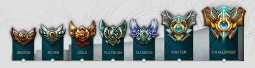
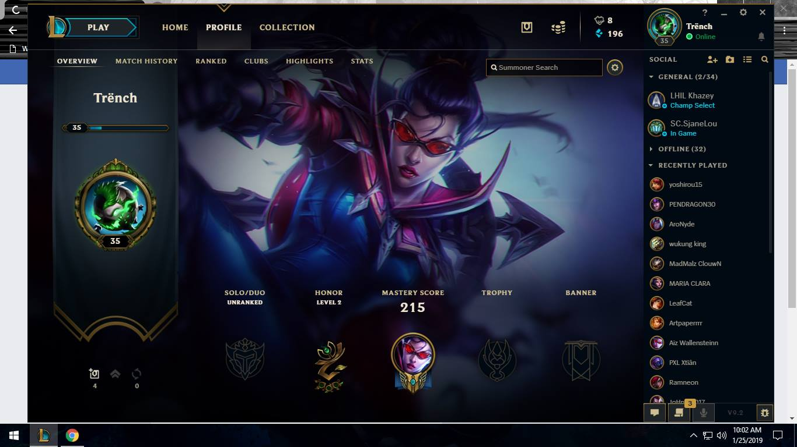
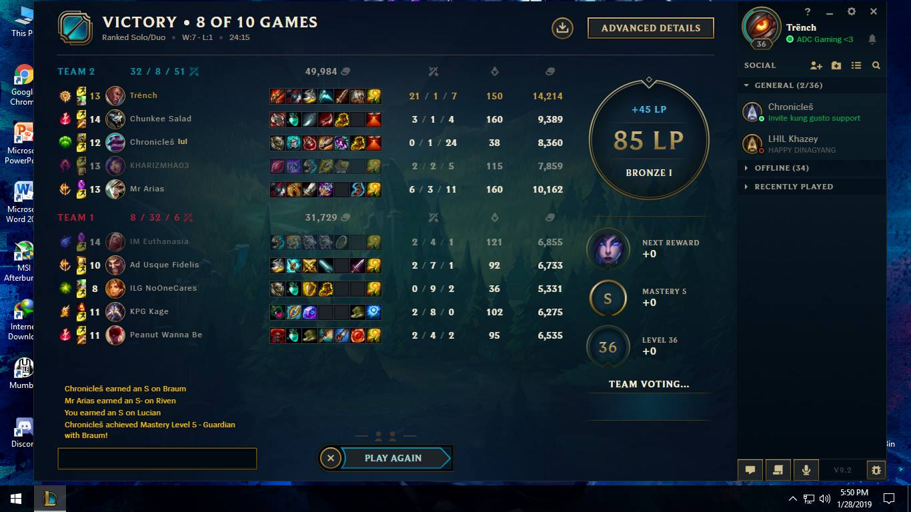

League of Legends

GAME PLAY
League of Legends, As in other multiplayer online battle arena (MOBA) games, each player in League of Legends controls a character ("champion") with a set of unique abilities. Most games involve two teams of five players, with each player using a different champion.The two teams compete to be the first to destroy the Nexus structure within the opposing base.
Over the course of each game, champions become stronger and gain additional abilities by earning experience and thereby levelling up. Experience is earned by killing enemies (or being nearby when a teammate does). Champions also build strength over the course of the game by buying progressively more powerful items using gold, which is earned by killing non-player enemies, killing or assisting in killing enemy players, destroying enemy structures, or selling other items.
This game is more in tactics and cool gameplay and i play also mobile legends but im so focused at pc games this game is more in cosmetics and animations thats why i like this game.
ACHIVEMENTS
I play this game in year 2014 to 2017 and the impact of this game for me is the instinct of being a player to dodge some skills etc. Because game i met some friends in online and i enjoy the game even im derank situation its fine but really stressy and so hard to grind a rank you need to be a deccent player or not chocking or tilted in the game to have a better performance. Here i will show the rank system and what is my higher rank that i achive and many more.
RANK SYSTEM

My higher rank: PLAT 1 (Almost Diamond but i did not play because i dont have much time)
And there is 5 role at this game and this are: TOP/MID/BOTTOM/JUNGLER and SUPPORT and this is my roles.
My Role: MID/ADR
My Secondary Role SOLO TOP/JUNGLER
Some of my screenshots and this is my last game
 
Some pentakills one and only clip i have
I lost my old screenshots and pictures because of very long not playing this game anymore but this game have a memorable times if you want to play this game i put the link and its free to play.